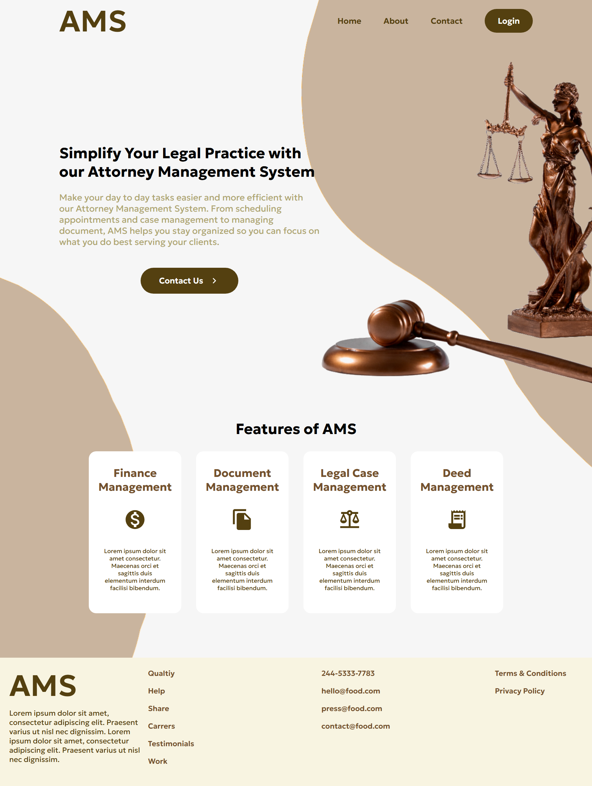
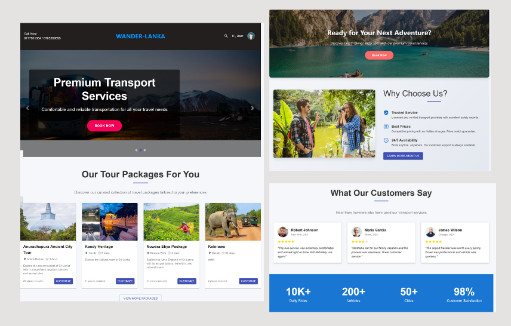
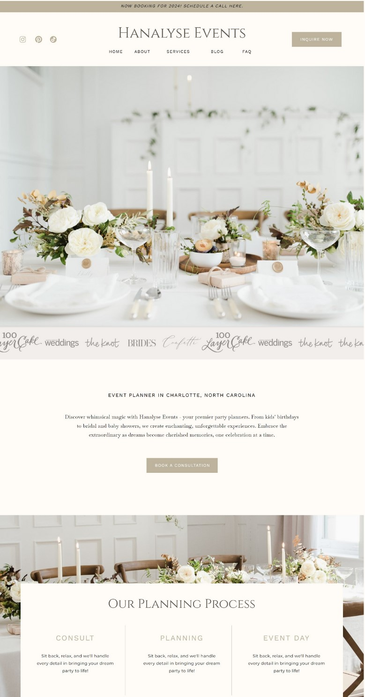
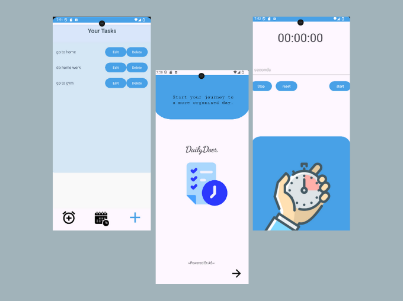
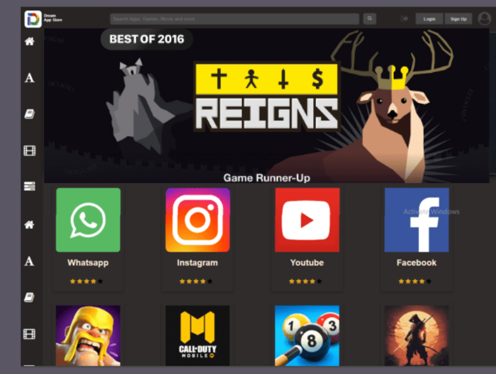
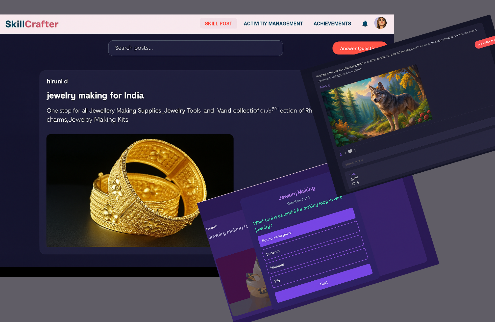
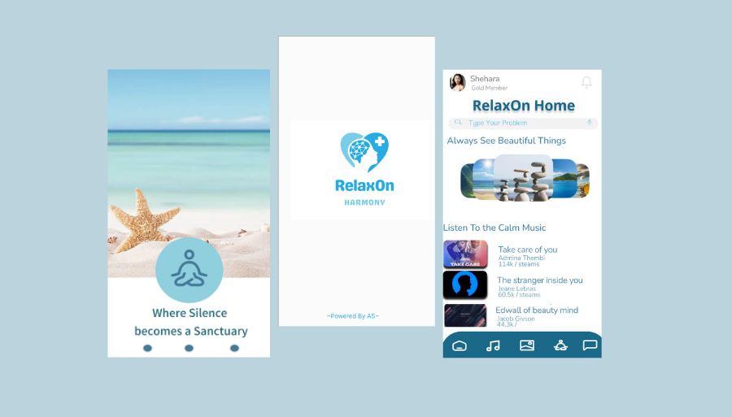

01AI & Machine Learning
CattleSense – Lumpy Skin Disease Detection Module
An AI cattle screening module using YOLOv8 to detect skin nodules and ResNet50 to classify image regions. It combines image predictions with clinical symptoms to estimate disease risk and provide guidance, integrated into CattleSense as a Flask microservice.
YOLOv8 · ResNet50 · Flask · Computer Vision

CattleSense Research Project
02Web Development
Attorney Management System
Developed the Attorney Management component of a MERN web app, including law firm and lawyer profiles, user roles, secure password updates, document approvals, and an operations dashboard.
MongoDB · Express.js · React.js · Node.js · Postman

Attorney Management System
View on GitHub
03Web Development
Tourist Management System
Implemented a dynamic booking system with real-time vehicle and driver availability checks. Added reservation updates and cancellations, input validation, accurate assignments, and admin reporting for booking trends, revenue, and cancellations.
MongoDB · Express.js · React.js · Node.js · Postman

Tourist Management System
View on GitHub
04Web Development
Online Event Planning Web Application
Implemented a validated Contact Us form so users can send inquiries and feedback directly to event organizers.
Java · MySQL · CSS · JavaScript

Online Event Planning Web Application
View on GitHub
05Mobile App Development
Multi-Feature Productivity Mobile App
DailyDoer helps users stay organized with task management, reminders and notifications, a handy widget, and a timer with an alarm.
Kotlin · XML · Android Studio

Multi-Feature Productivity Mobile App
View on GitHub
06Web Development
Online App Store
Developed a web app store where users can browse, search, review, rate, and download apps. Includes authentication, app categories, and an admin panel for managing listings.
HTML · CSS · PHP · JavaScript · SQL Server

Online App Store
07Web Development
Skill Sharing Web Application
Built user engagement features for SkillCrafter, including comment creation, editing, deletion, and moderation, plus likes and view tracking.
Spring Boot · Thymeleaf · MySQL · Bootstrap · GitHub

Skill Sharing Web Application
View on GitHub
08Mobile App Development
Mind Relaxing App
Designed and developed RelaxOn, a wellness Android app with personalized meditation schedules, calming music, breathing exercises, and a peaceful image gallery. Includes profile management and cross-device syncing.
Figma · Kotlin · XML · Android Studio

RelaxOn · Mind Relaxing App
View on GitHub